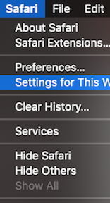
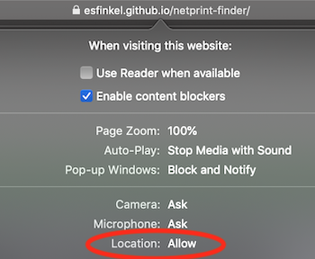

Tip:
For Safari on a computer (in some cases),
- click "Safari" in menu bar, then "Settings for This Website"
- set "Location" to "Allow"
and Safari will remember that this website is allowed to access your location.
This won't affect your settings for any other website.


These may require a Cornell login and/or WiFi/VPN access: